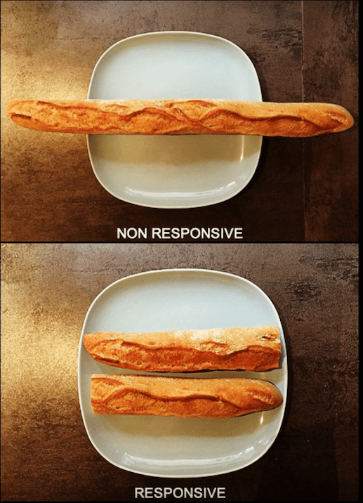
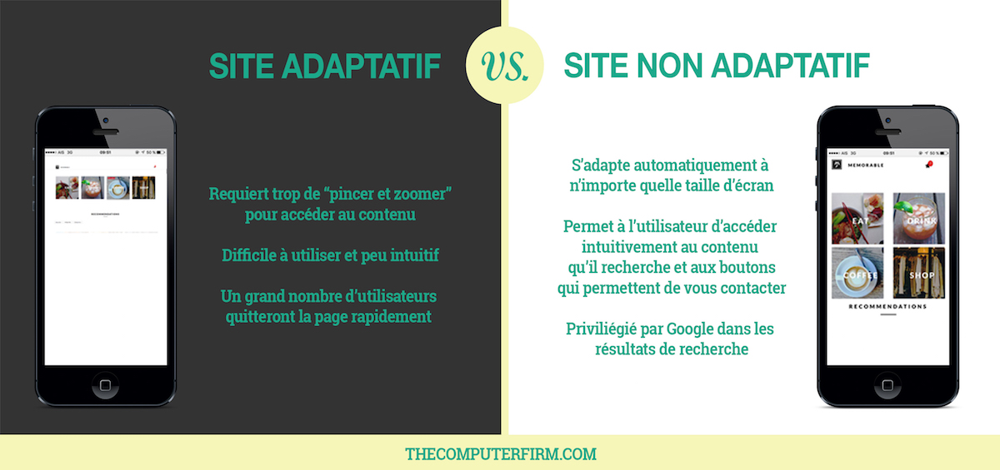
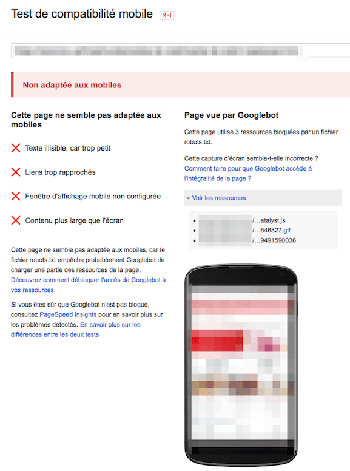
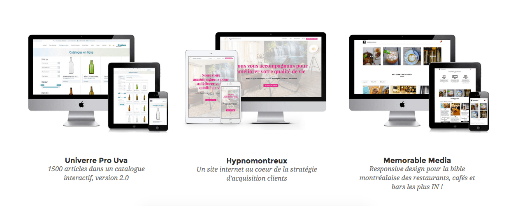

26/10/16 - temps de lecture: 3 minutes
Responsable Marketing et Communication chez The Computer Firm
Comment mon site apparaît-il sur tablette et mobile ? La réponse en 30 secondes grâce au Test d’Optimisation Mobile de Google.
Que voient les visiteurs de mon site lorsqu’ils consultent ma page depuis leur mobile ou tablette ?
La réponse dépend de si votre site est, ou non, adaptatif (en version originale, “responsive”).
C’est à dire:
Optimisé pour être consulté aussi bien depuis un poste fixe, qu’une tablette ou un téléphone portable, sans que la navigation ou le design soient impactés.
En d’autres termes:

Le sujet a pris de l’importance au cours des dernières années, alors qu’un nombre exponentiel d’utilisateurs naviguent sur le web depuis leur téléphone portable. Elle est devenue fondamentale en avril 2015, lorsque Google a changé son algorithme pour indexer en priorité les sites adaptatifs, au détriment des autres.
Vous ne pouvez pas choisir le support qu’utilisent les utilisateurs pour consulter votre site.
Alors que, dans de plus en plus de pays, le trafic mobile dépasse celui de l’ordinateur, il n’est plus possible d’ignorer les utilisateurs qui utilisent cette option pour trouver des informations sur vous et interagir avec votre entreprise. Google l’a bien compris lorsqu’il a décidé l’année dernière de donner la priorité d’apparition dans les résultats de recherche aux sites ayant été optimisés pour une navigation fluide sur tous supports. En tant que premier moteur de recherche mondial, il se doit de fournir à ses utilisateurs les résultats les plus pertinents, et a donc procédé à une modification de son algorithme.
Ainsi, un site non adaptatif soulève les deux problèmes suivants :
- Les utilisateurs qui cherchent à obtenir des informations sur votre entreprise auront des difficultés à y accéder. Or, vous n’avez que quelques secondes pour capter l’attention d’un internaute, et le convaincre de vous contacter et d’utiliser vos services.
- Votre visibilité en ligne, c’est à dire la capacité de clients potentiels à vous trouver en cherchant les mots clefs qui vous représentent, en sera réduite.

Site adaptatif vs. site non adaptatif
Comment savoir si votre site est adaptatif ?
Rien de plus simple, grâce au test d’optimisation mobile mis en place par Google. Il vous suffit de copier votre URL, de laisser le test tourner quelques secondes, et Google vous fournit une réponse claire, avec des pistes d’amélioration.

Test d’optimisation mobile mis en place par Google
Que faire si votre site n’est pas adaptatif ?
En fonction de la date à laquelle le site a été réalisé, et du système de gestion de contenu utilisé, cela peut être un problème simple à régler.
Quelque soit la plateforme utilisée pour créer le site, The Computer Firm peut vous conseiller, et vous fournir une évaluation sans frais, afin de vous permettre de délivrer votre message à vos utilisateurs le plus efficacement possible, et d’être trouvé par vos clients potentiels en quelques clics.
N’hésitez pas à nous contacter à hello@thecomputerfirm.com,
ou au + 41 22 548 02 86.

Exemples de sites adaptatifs réalisés par The Computer Firm
Responsable Marketing et Communication chez The Computer Firm